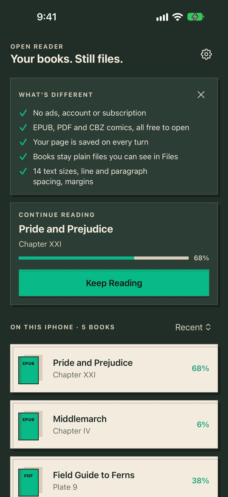
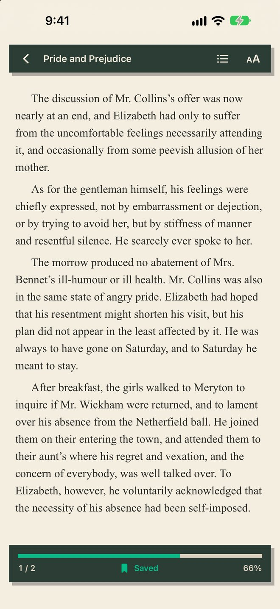
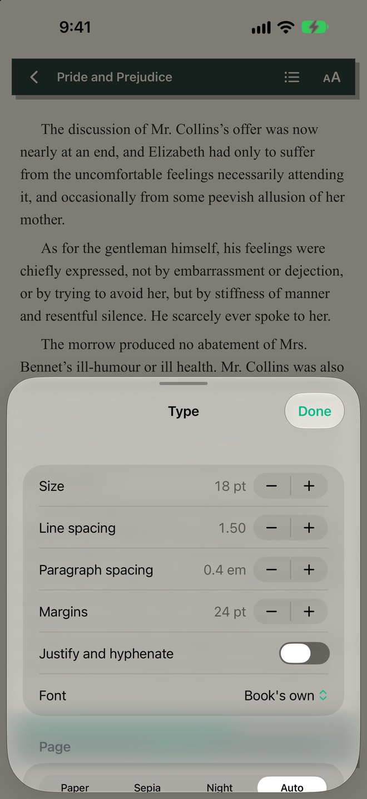

Open AppCo Get the app Support Privacy
Open AppCo app #8
Live on the App Store
Open Reader is live.
Read your own EPUB, PDF and comics. Your books stay files.
Live on the App Store. Collect feedback and maintain.
Status checked 2026-10-25.
Get the app
The actual app
What it looks like.

Your books, as plain files you can see. 
Your page is saved on every turn. 
14 sizes, spacing and margins.
34-second device check
On a real iPhone.
On a real iPhone at 2x speed: launch from the Home Screen, keep reading where you stopped, turn pages, open Contents, make the text bigger, relaunch and land on the same page.
Your browser does not support the demo video.
Why this app exists
What people complained about, and what we changed.
We read 6,760 App Store reviews of 11 ebook and comic readers. These complaints kept coming up.
“it deleted every single book that I had downloaded and all my reading data”
PureLibro: eBook Reader on the App Store
What Open Reader does instead
Books are copied, unchanged, into a folder you can see in Files. The app never moves or rewrites them.
“these downloaded books get offloaded to icloud or something, so I can’t read them without downloading”
Apple Books on the App Store
What Open Reader does instead
Nothing is offloaded. Every book stays on your iPhone.
“Doesn't auto-bookmark your book upon closing”
Epub Reader -read epub,chm,txt on the App Store
What Open Reader does instead
Your page is saved on every page turn and comes back when you reopen the app.
“the font choices are still "too big" and "too small". And it's still impossible to turn off full justification”
Ebook Reader on the App Store
What Open Reader does instead
14 text sizes, and justification is off unless you turn it on.
“you can adjust line hight, but not the space between paragraphs”
eBoox - fb2 ePub book reader on the App Store
What Open Reader does instead
Line spacing, paragraph spacing and margins each have their own control.
“the free version won’t read CBZ files until you try to read them and then it prompts you to buy their paid subscription”
PureLibro: eBook Reader on the App Store
What Open Reader does instead
EPUB, PDF and CBZ comics all open in this version, with no purchase.
“ads that show up while you are turning pages in a book”
Epub Reader -read epub,chm,txt on the App Store
What Open Reader does instead
No ads in this version.
“there is no way to bulk import books, you have to add them one at a time”
PureLibro: eBook Reader on the App Store
What Open Reader does instead
Pick many files, or a whole folder, at once.
Get the app
Open AppCo · Everyday apps. Built in public.